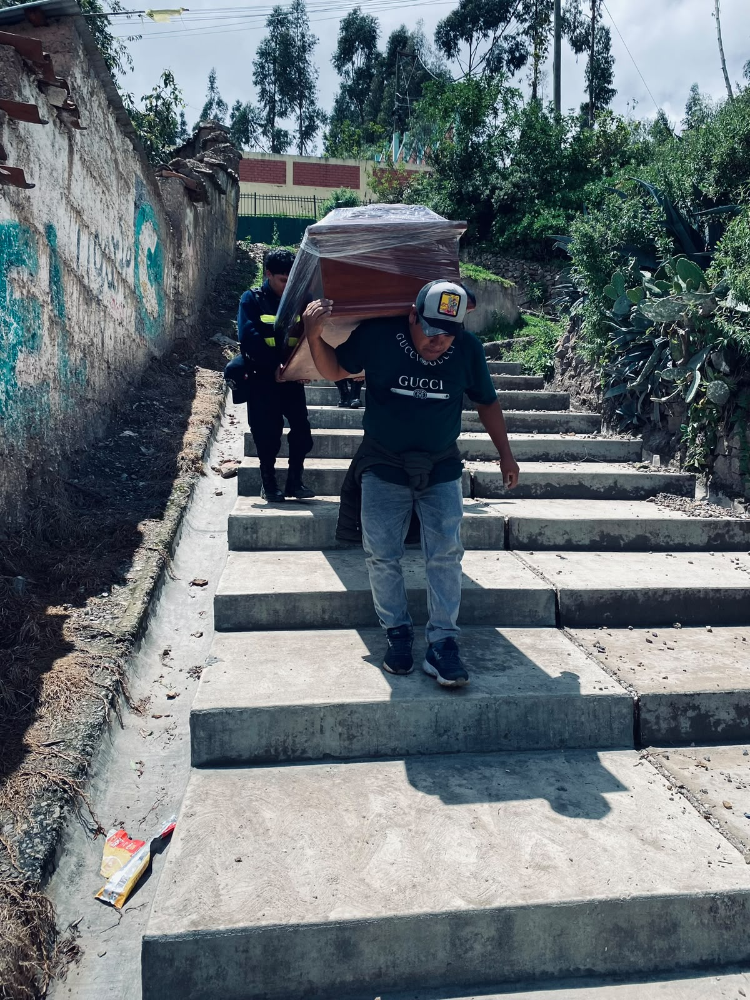
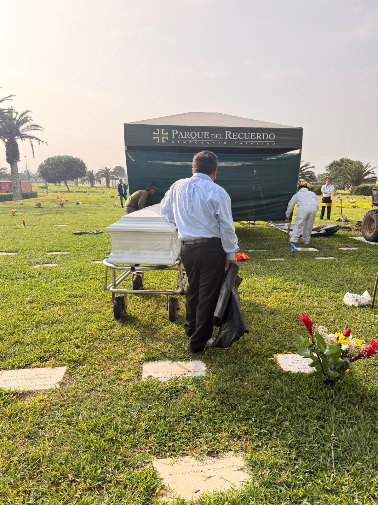
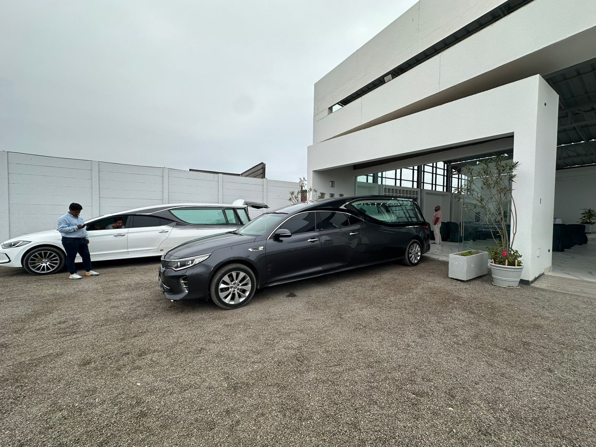
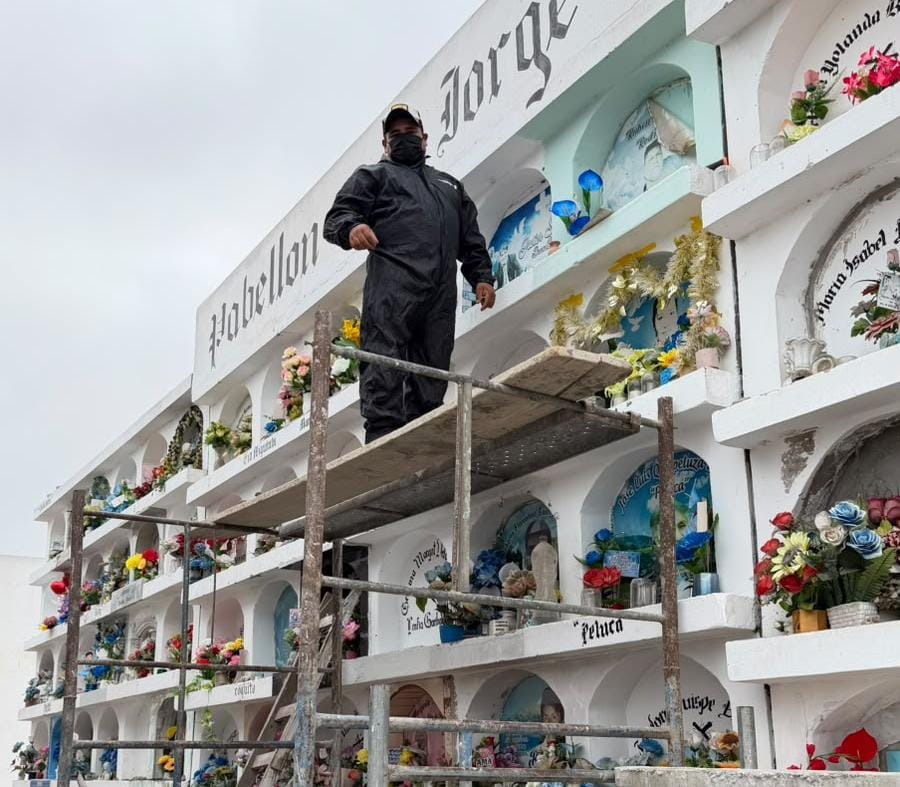
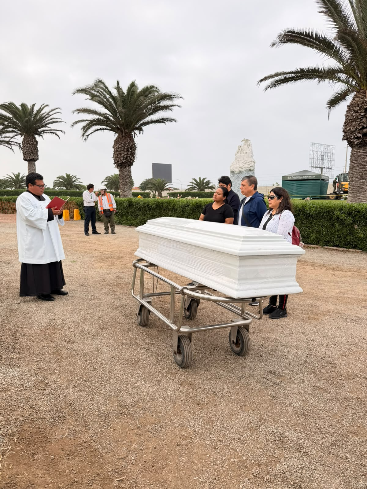

Coordinamos el traslado de tu ser querido con la logística, documentación y el respeto que cada familia merece, dentro de Lima o hacia cualquier provincia del Perú.

Realizamos traslados de restos humanos desde Lima hacia diferentes provincias del Perú, coordinando el proceso de manera integral.
Nos encargamos de la logística y documentación necesaria para que el traslado se realice bajo las condiciones correspondientes y con el máximo respeto hacia el ser querido y su familia.

Gestionamos traslados dentro de Lima Metropolitana entre domicilios, centros de salud, velatorios y camposantos, cuidando cada detalle del proceso.
Nuestro equipo está disponible las 24 horas para responder con rapidez ante cualquier necesidad, brindando siempre orientación cercana a la familia.


